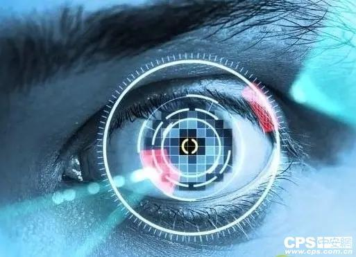

在北京安防展上，“人体生物特征识别”展区，搭载生物识别技术的各种智能终端及应用精彩亮相。生物识别技术以其与生俱来的便捷性(随身携带)和安全性，在智能安防领域大放异彩，从指纹识别、人脸识别，虹膜识别到综合生物识别，生物识别技术已经发展成为互联网时代智能安防的标配技术之一。
虹膜识别技术并不是新鲜词，早在2013年，国内就已经有了虹膜研发生产聚集地，在多年研究的基础上也均开发出了各自虹膜识别的核心算法，成为了世界上少数几家掌握了虹膜识别核心算法的单位之一。从识别方式来看，生物识别可以分为指纹识别、人脸识别、声音识别、虹膜识别与静脉识别等等。其中，指纹识别应用已经极为广泛，人脸识别应用正在兴起，这两项识别技术最为大众熟知。然而，在业界看来，生物识别领域能充当“黑科技”存在的，应该是虹膜识别技术。
虹膜识别技术有哪些优势?
相比目前主流的指纹识别来说，虹膜识别会更加安全，这也是被主流智能手机厂商对其青睐有加的重要原因。综合来讲，虹膜识别技术还有一下几大优势：
1、稳定性。人出生7个月之后，虹膜基本稳定，终身不变;
2、唯一性。每个人的左眼和右眼虹膜都是不一样的，即使是同卵双胞胎的虹膜纹理亦不相同;
3、非接触。跟其他的生物认证技术如指纹、指静脉、掌静脉等相比，虹膜识别在使用上更灵活、更方便;
4、具有天然的活体检测优势;
5、在移动终端上进行虹膜登录、支付，比密码和指纹更安全。
虹膜识别的安全性更高
近年，虹膜识别在朝远程识别与移动化发展，在此趋势下，虹膜识别技术迎来了进入大众化领域的契机。虹膜识别基于眼睛中的虹膜(位于黑色瞳孔和白色巩膜之间的圆环状部分)进行身份识别，它是业界公认的最精准与最安全的生物识别技术，业界透露，虹膜识别误识率可低至百万分之一，与之相比，指纹识别误识率为0.8%，人脸识别则为2%。再加上虹膜识别技术需要活体的虹膜信息，眼球剥离人体后，虹膜会随瞳孔放大失去活性，将被机器拒识，因此，虹膜识别的安全性更高。
虹膜识别向来有“生物安全技术”之称，在安博会上全功能虹膜识别模块可与安检、门禁、箱柜、门锁等专业安防设备进行无缝连接，自由集成，实现精确的出入控制、安全操作及监管功能;针对更高级别的安全应用，有一种搭载指纹、人脸及虹膜识别技术的综合生物识别仪，可用于安全门禁、金库管理、监狱监管等，现场科技力MAX，吸睛无数，引发互动热潮。
6.57亿美元市场待挖掘
有媒体报道，卡耐基梅隆大学生物识别中心已经研发出一种识别距离远达12米的虹膜扫描识别技术，它可以在车主眼睛不经意扫过汽车后视镜时，快速读取车主的虹膜信息，并将虹膜信息与数据库做匹配，从而显示出车主的名字以及其他信息。据TrendForce集邦科技旗下研究品牌拓墣产业研究所(TRI)认为，生物识别技术在金融领域的应用产值有望从2015年的1.23亿美元上升至2019年的6.57亿美元，亚太地区成长潜力最大。
拓墣进一步指出，随着物联网时代来临，智能整合大举提高了电子设备的安全需求，安全度较高的生物识别成为厂商积极开发的重点，虹膜识别是其中之一。另外，其他研究机构的数据表明，虹膜识别的市场占有率有望从2015年的7%上涨至2020年的16%，年均复合增速超过36%。
随着指纹、人脸、虹膜识别应用的快速推进，声纹、静脉等其他各类生物识别应用也将紧随其后。多种生物识别方式组合运用将是未来智能安全技术的发展方向。显而易见，虹膜识别技术的发展俨然已经步入2.0时代，其应用全面开启，火力十足，不但应用形式朝多样化方向发展。同时，虹膜识别技术极高的精确性和安全性，有望成为继指纹识别和人脸识别之后，能够大量应用在移动设备上的又一生物技术。